Frostwake Peaks · production motion Eleven user-approved identities. 70 selected clips. GIFs below show 3× nearest-neighbor playback of native 128×104 cels, with a fixed floor four pixels above the bottom. Each character retains its approved 15-color palette and binary alpha. The native PNGs and technical records establish dimensions; this gallery is a visual review.
Original still approval comparison · Clip timings · Native checks
Native key poses · 1× source scale 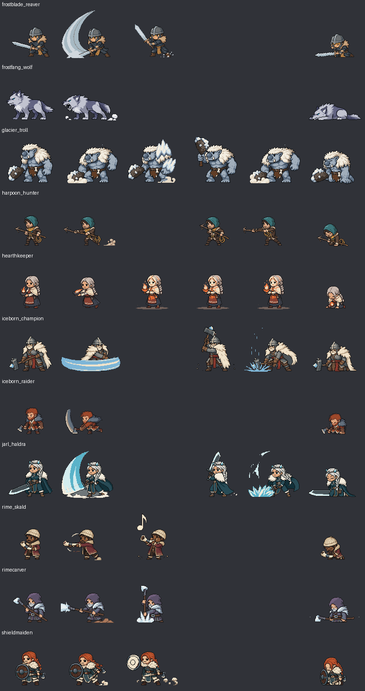
Frostblade Reaver Idle 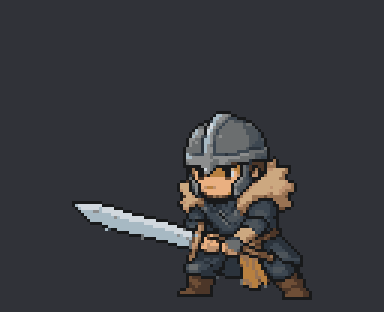
9 exposures · 1170 ms AutoAttack 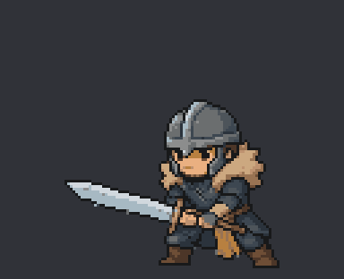
9 exposures · 680 ms Hit 5 exposures · 320 ms Death 9 exposures · 800 ms Ability 9 exposures · 880 ms Frostfang Wolf Idle 9 exposures · 1170 ms AutoAttack 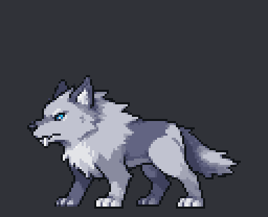
9 exposures · 680 ms Hit 5 exposures · 320 ms Death 9 exposures · 800 ms Glacier Troll Idle 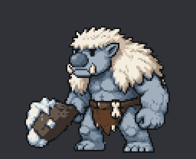
9 exposures · 1170 ms AutoAttack 9 exposures · 680 ms Hit 5 exposures · 320 ms Death 9 exposures · 800 ms Ability 9 exposures · 880 ms ChannelStart 4 exposures · 420 ms ChannelHold 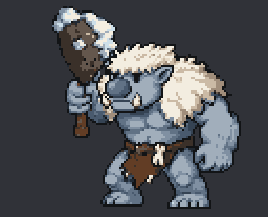
1 exposures · 130 ms Interrupt 4 exposures · 320 ms Release 6 exposures · 720 ms Harpoon Hunter Idle 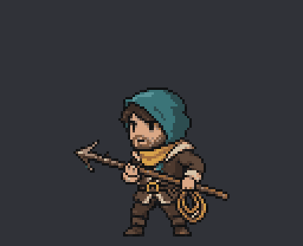
9 exposures · 1170 ms AutoAttack 9 exposures · 680 ms Hit 5 exposures · 320 ms Death 9 exposures · 800 ms ChannelStart 3 exposures · 280 ms ChannelHold 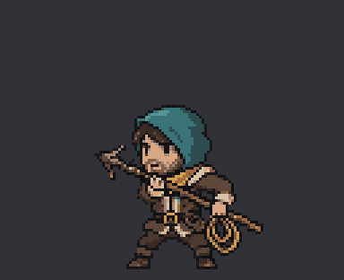
1 exposures · 130 ms Interrupt 3 exposures · 180 ms Release 9 exposures · 880 ms Hearthkeeper Idle 9 exposures · 1170 ms AutoAttack 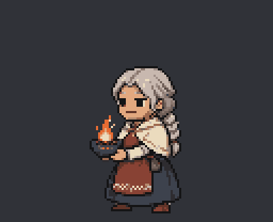
9 exposures · 680 ms Hit 5 exposures · 320 ms Death 9 exposures · 800 ms Ability 9 exposures · 880 ms ChannelStart 4 exposures · 420 ms ChannelHold 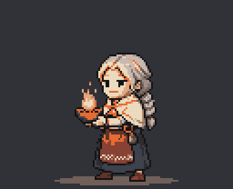
4 exposures · 600 ms Release 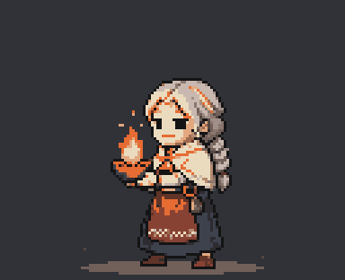
4 exposures · 400 ms Interrupt 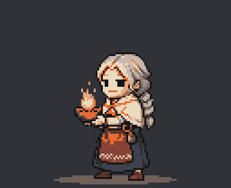
4 exposures · 320 ms Iceborn Champion Idle 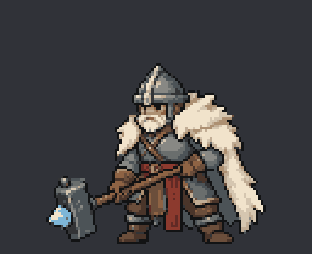
9 exposures · 1170 ms AutoAttack 9 exposures · 680 ms Hit 5 exposures · 320 ms Death 9 exposures · 800 ms ChannelStart 7 exposures · 600 ms ChannelHold 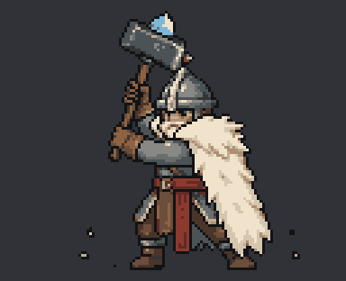
1 exposures · 130 ms Interrupt 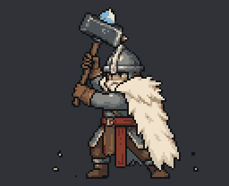
7 exposures · 420 ms Release 9 exposures · 880 ms Iceborn Raider Idle 9 exposures · 1170 ms AutoAttack 9 exposures · 680 ms Hit 5 exposures · 320 ms Death 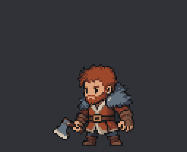
9 exposures · 800 ms Jarl Haldra Idle 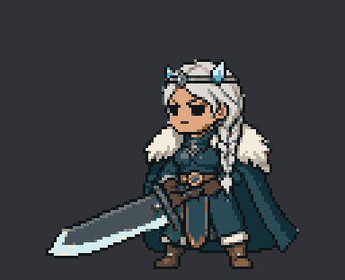
9 exposures · 1170 ms AutoAttack 9 exposures · 680 ms Hit 5 exposures · 320 ms Death 9 exposures · 800 ms ChannelStart 7 exposures · 600 ms ChannelHold 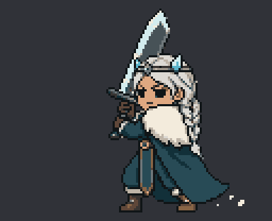
1 exposures · 130 ms Interrupt 7 exposures · 420 ms Release 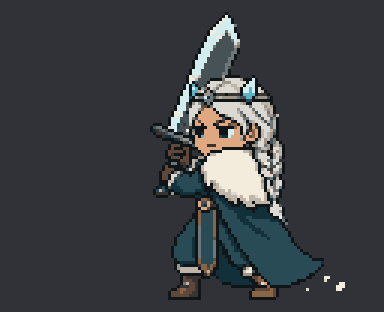
9 exposures · 880 ms Rime Skald Idle 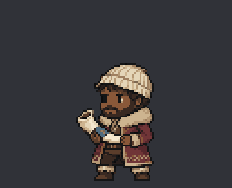
9 exposures · 1170 ms AutoAttack 9 exposures · 680 ms Hit 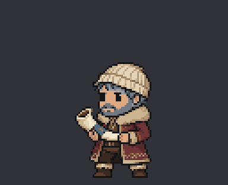
5 exposures · 320 ms Death 9 exposures · 800 ms Ability 9 exposures · 880 ms Rimecarver Idle 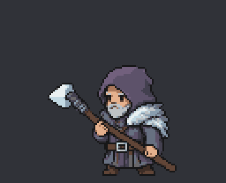
9 exposures · 1170 ms AutoAttack 9 exposures · 680 ms Hit 5 exposures · 320 ms Death 9 exposures · 800 ms Ability 9 exposures · 880 ms Shieldmaiden Idle 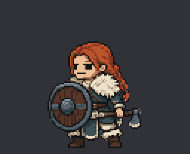
9 exposures · 1170 ms AutoAttack 9 exposures · 680 ms Hit 5 exposures · 320 ms Death 9 exposures · 800 ms Ability 9 exposures · 880 ms